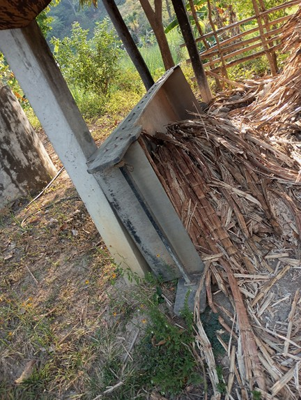
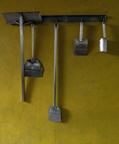
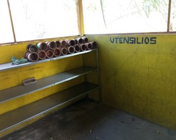
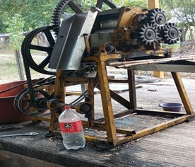

En los campos de nuestra comunidad nace una tradición que ha pasado de generación en generación: el cultivo de la caña de azúcar. Cada planta representa el trabajo, la dedicación y el conocimiento de los productores que mantienen viva esta actividad.
At´aj T´ojom T´inom es un espacio para conocer la cultura, el proceso y la importancia de la producción de caña y piloncillo en nuestras comunidades. Te invitamos a descubrir la historia que existe detrás de cada cosecha.
Descubrir masLa producción de caña de azúcar es una de las actividades agrícolas más importantes en muchas regiones rurales. Además de representar una fuente de trabajo, también forma parte de la identidad cultural de las comunidades.
Nuestro objetivo es entregar la mejor calidad del piloncillo, cada dia nos enforzamos mas para entregar los mejores productos.
Somos orgullosamente hablantes de la lengua tenek, este trabajo lleva de generacion inculcado por nuestros abuelitos.
El trabajo se lleva con mucho cariño y profesionalismo garantizando que las familias, disfruten de los productos y vean como este trabajo se ha mantenido con el pasar de los tiempos.
En comunidades como El Chuche, Tanlajás, San Luis Potosí, la producción de caña no solo es un trabajo, sino una tradición que une a las familias y fortalece la identidad cultural de la región.

Es sumamente importante al momento de la coccion de la caña.
Ayuda para darle forma al piloncillo y se espera unos 3 minutos para sacarlos.
Lo mas importante ya que facilita todo el proceso de exprimir la caña.



Si deseas conocer más sobre la historia de la caña, los métodos de produccion los precios y saber donde puedas contactarnos la importancia de este producto en la economía local, te invitamos a explorar las diferentes apartados de nuestro sitio.
Cada sección te permitirá comprender mejor el valor cultural y productivo que tiene la caña de azúcar en nuestras comunidades.